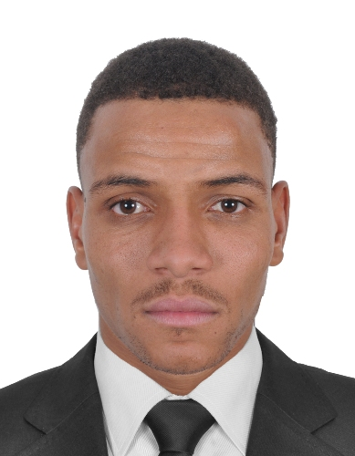

Bonjour, je suis
Kharmouch Abdessamad
Je conçois et développe des pipelines de données pour collecter, transformer et organiser les données, ainsi que des entrepôts de données pour faciliter leur exploitation et leur analyse. Je travaille également sur des projets de Data Science et d’Intelligence Artificielle, notamment le Machine Learning et le Deep Learning, afin de transformer les données en informations utiles et de développer des solutions intelligentes. Je suis à la recherche de projets innovants qui me permettront de mettre en pratique mes compétences, d’apprendre de nouvelles technologies et de contribuer à la résolution de problèmes concrets..

À propos de moi
Mon profil en quelques lignes
Titulaire d’un Master en Intelligence Artificielle et Applications, je m’intéresse particulièrement à la conception de solutions basées sur les données et l’intelligence artificielle.
En Data Engineering, je développe des pipelines de données permettant de collecter, nettoyer, transformer et intégrer des données provenant de différentes sources. Je m’intéresse également à la conception d’entrepôts de données (Data Warehouses) pour structurer, centraliser et faciliter l’exploitation des informations, en utilisant des technologies telles que SQL, Python et Talend.
En Data Science et en Intelligence Artificielle, je travaille sur l’analyse exploratoire des données, la visualisation et le développement de modèles de Machine Learning et de Deep Learning. Mon objectif est d’extraire des informations pertinentes, d’identifier des tendances et de concevoir des modèles capables de répondre à des problématiques concrètes.
Curieux, motivé et désireux d’apprendre, je souhaite mettre mes compétences au service de projets innovants, approfondir mes connaissances techniques et contribuer au développement de solutions fiables, intelligentes et adaptées aux besoins des entreprises.
Data Engineering
ETL/ELT, pipelines de données, Data Warehouse, Big Data.
Intelligence Artificielle
Machine Learning, Deep Learning et détection d'anomalies.
Développement
Python, Java, SQL et développement web (Django, Flask, FastAPI).
Informations personnelles
- Nom
- Kharmouch Abdessamad
- Ville
- Casablanca, Maroc
- Formation
- Master en Intelligence Artificielle et Applications
- Langues
- Arabe, Français, Anglais
- Intérêts
- Data Engineering, Big Data, Data Lakes, architectures Lakehouse, ETL/ELT, Data Warehousing, Data Science, Machine Learning, Deep Learning, Intelligence Artificielle générative, Cloud Computing
Mon parcours académique
Mon cheminement éducatif et mes formations
Master en Intelligence Artificielle et Applications
Université Ibn Zohr, Faculté Polydisciplinaire, Ouarzazate
Licence en Sciences Mathématiques, Informatiques et Applications
Université Ibn Zohr, Faculté Polydisciplinaire, Ouarzazate
DEUG en Sciences Mathématiques, Informatiques et Applications
Université Ibn Zohr, Faculté Polydisciplinaire, Ouarzazate
Baccalauréat Scientifique, Sciences Physiques
Lycée Sidi Amrou, Tazarine